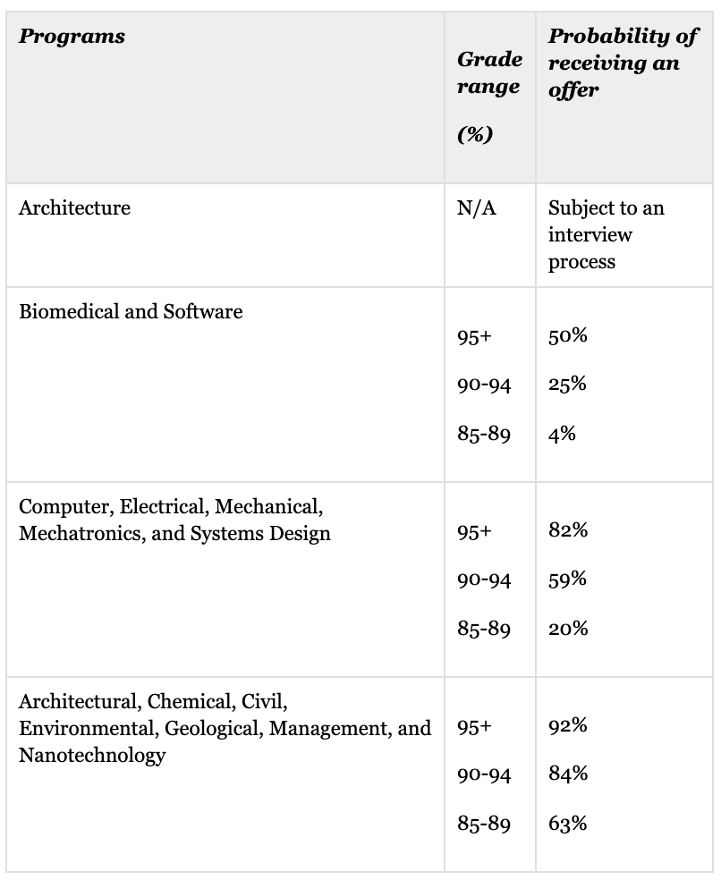

What is a Software Engineer Manager?
A Software Engineer Manager who is also known as a Software Development Manager is an individual who is responsible for taking charge of development of an application, by managing a certain number of Software Engineer. In many major companies, the only way of getting a position as a Software Engineer Manager is by performing well as a regular Software Engineer. Thus the process of getting a job as a Software Engineer Manager is only possible when you work hard enough as a Software Engineer. Although the chances of landing a job as a Software Engineer Manager is slightly increased when you take a degree of computer related studies with a mix of a business degree, it is not required. Therefore I will be conducting my research of becoming a Software Engineer, knowing that to get a position as a Software Engineer Manager, you must perform well as a Software Engineer.
What are Software Engineers?
Software engineers are a combination of computer engineers and computer science graduates, thus resulting in them being super valuable. Software engineers often research, design, evaluate, and integrate software. They also maintain software applications, technical environments, operating systems, embedded software, information warehouses, and telecommunication software. Though software engineers are expected to do various tasks as mentioned above, most software engineers have one to three duties in a company and don't have to learn and put the time in other tasks until they have completed the provided tasks. This usually results in the work being finished faster, and more efficiently. For example, a software engineer can design, evaluate, and research for 2 years before changing duties to maintain, or to do something that they have not yet done. They can also be provided with more duties for the same category. For example, if I complete designing a website page, I can be told to design another website page. Many software engineers are self-employed. There are also people who hire computer science graduates from third world countries for cheap labor, to complete projects for them. While other individuals make a business by hiring 5-100 software engineers and then approach big tech companies like Google to tell them that they can help them complete a project or two for a certain amount of money
What are Software Engineers Managers?
Software Engineering Manager manages and oversees the design and development of software applications. Directs the work of engineers to ensure the best practices around software development. Being a Software Engineering Manager requires a bachelor's degree. Typically reports to a senior manager. The Software Engineering Manager manages subordinate staff in the day-to-day performance of their jobs. True first level manager. Ensures that project/department milestones/goals are met and adhering to approved budgets. Has full authority for personnel actions. Extensive knowledge of department processes. To be a Software Engineering Manager typically requires 5 years experience in the related area as an individual contributor. 1 to 3 years supervisory experience may be required (salary, 2021).
How many hours do Software Engineer Managers Work?
Software Engineer Managers can choose how long they work as they are completely independent; But they are required to finish projects by a due date. Therefore they can work of a minimum of an hour a day, considering the fact that they check over all requests or questions by the Software Engineers that they are teaching. But on average Software Engineer Managers can work anywhere from 5-7 hours a day.
How much do Software Engineer Managers Make?
In the USA, Software Engineers, and Software Engineer Managers get paid significantly more than Canadian Software Engineers, and Software Engineer Managers. This is due to the geological location and the respect in certain areas such as Silicon Valley. But in Canada Salaries for Software Engineer Managers ranges from $97,000 - $179,000, where $132,000 is the average pay. The average American Salary for a Software Engineer Manager ranges from $160,000(cad) - $285,760(cad), where $213,110 (cad) is the average pay.
What is the median income for Software Engineers in Canada?
Unfortunately in the 21th-century sexism is still taking place all around us and in workplaces. The median income for software engineers in Ontario between all genders is $94,715 but this number can definitely change depending on the location. An example of this can be comparing the Ontario average of $94,715 to Manitoba's average of $126,760.
An average salary of a software engineer varies a lot depending on many factors such as the location of the job, by gender orientation as well as by the level of educational attainment. As mentioned earlier, the average pay in Ontario is 94,715 while in Manitoba, it is 126,760. I assume one reason for this variance could be the demography of the area causing employee shortage or abundance. Studies from the Canadian government have shown that male software engineers make $96,245 on average compared to $87,825 for females. The annual salary also depends on the degree the individual has attained, for example, the individual with a Bachelor’s degree makes $95,673 compared to an individual with earned Doctorate, who makes $108,543. Interestingly, if I compare the pay with our neighboring country, there is a higher pay in the San Francisco Bay Area or any other American states as there are headquarters for many companies in each state. In San Francisco, there is a place called Silicon Valley where many big companies employ the top software engineers, thus resulting in high pays by each company to attract the employees to their particular company. All Canadians working for these companies remotely have low pay since there is currently no headquarter for any major company in Canada. Hopefully, Google continues with its plans to open its headquarter in Toronto, I assume that will affect the pay scale of the Canadain employees working at this headquarter.
Price, S. (2019, August 07). More Canadian Software Engineers Should Work Remotely. Retrieved October 07, 2020, from https://medium.com/@sprice/more-canadian-software-engineers-should-work-remotely-c69f52c746d4
Educational Path that is required:
Education and training pathways:
Canada:
- A 2-year college program for software engineering or computer science.
- A 5 years bachelor's degree, usually in computer science, computer systems engineering, software engineering or mathematics, or completion of a college program in computer science is usually required.
- A master's or doctoral degree in a related discipline may be required.
- Licensing by a provincial or territorial association of professional engineers is required to approve engineering drawings and reports and to practice as a Professional Engineer.
Ontario:
- A license from Professional Engineers Ontario is required to approve engineering drawings and reports, to offer or provide services to the public, and engage in the practice of professional engineering.
The University of Waterloo for Software Engineering

University of Waterloo approves $88-million Engineering 7 building. (2014, October 29). Retrieved October 11, 2020, from https://uwaterloo.ca/news/news/university-waterloo-approves-88-million-engineering-7
Most universities in Canada do offer Software Engineering, but there are some specific top universities which employers would prefer to see on the resumes. These universities are known for being excellent for engineering. The top 10 universities for engineering are the University of Ottawa, McMaster University, Simon Fraser University, University of Alberta, McGill University, University of Waterloo, University of British Columbia, University of Toronto, University of Calgary, and University of Ontario Institute of Technology. Some of these universities are far away from the Brampton area, it would be very hard for me to commute to these universities or to move to the area near there, but I assume, I will have to do what it will require to get a good education. The name of the institution that I want to attend for Software Engineering with co-op is the University of Waterloo.
What is the name of the program? The name of the program that I would like to attend at the University of Waterloo is software engineering. At the University of Waterloo, I will get the chance to make many programs such as VR (Virtual Reality) program for surgeons. I, along with my classmates can make the next hit application, such as a swipe right dating app, or we can even create an autonomous car driving system. At the University of Waterloo, I will not only write code but actually understand the architecture and the base of how the code is made. I will also learn how to apply algorithms and make an AI/user interface. Since software engineering is the combination of computer engineering and software engineering, I will get the chance to make computer components and electrical related things as well. This means that I will have to cover computer science, computer engineering, 1-year math, and co-op the program in just 5 years! While working with others on the projects, I will get multiple chances to manage projects. While at the University of Waterloo, I may get the chance to work at massive tech companies like Facebook, Snapchat through the co-op program. By the time I will graduate, I will be able to create efficient, cheap, and easy to use applications.
What are the required Secondary Prerequisite Courses to apply? Most universities that provide software engineering have similar requirements, but for the University of Waterloo, the requirements are that you take grade 12 English, Advanced Functions, Calculus and Vectors, Physics, Chemistry, and one additional Grade 12 university-level or university/college-level course. The University of Waterloo recommends the extra course to be Grade 12 U Computer Science and highly recommended that we should take a Grade 11 U introduction to computer science. There are also some non-academic requirements from the University of Waterloo; this includes having an admission information form (AIF) for admission and experience in developing well-structured programs. Taking the Euclid mathematics contests are strongly recommended.
What is the average admission requirements? The minimum grade of 70% is required in all prerequisite courses, but the minimum grade average that is recommended by the University of Waterloo is mid 95s. Recent studies from the University of Waterloo have shown that the students with an average mark higher than 95% have 50% chance of receiving an offer, while the students with an average of 90-94% have 25% chance of receiving an offer, and finally, students with an average of 85-89% have 4% chance of getting an offer. This minimum average is only expected to become higher with more and more students competing to get into this course in this university with higher percentage.
Other factors that affect the chances of getting in: There many factors that come together to "decide" whether you could get into the University of Waterloo engineering program. Many private schools in the Ontario region are willing to give high grades depending on how much you pay for your yearly fees, this was quickly recognized by the University of Waterloo. They then placed a system in that would figure out the schools that give grade boosts. They made something called the "Adjustment Factor", the adjust factor ranges from 0 to -100. The value of the adjustment factor is judged by the grade drop students have from a certain school when attending the university. If a school is not in the "Adjustment Factor" list, there "Adjustment Factor" would be considered to be -16% as a default. For example, if Bob graduates from Turner Fenton Secondary school with a 99% average, the University of Waterloo would see the previous kids' grades that had graduated from this school and how much their grades dropped by during completion of the Bachelor's degree. For example, Jack, Amy, and Tatum had an average of 98% when graduating from Turner Fenton School 3 years ago but when they joined the university, their averages dropped to 70% that would mean that the adjustment factor for Turner Fenton School is -28%. The University of Waterloo would now subtract 28% from Bob's high school average, which would become 71%. The University of Waterloo would now take the total AIF (Adjustment Information Factor- points based on extracurricular activities) score for Bob which could be 5 and add it to his grades 71%, which would now become 76%. Finally, the final interview score would be added to 76% which could be 3, thus resulting in it becoming 79%. The AIF and interview marks are not provided to the students. With an average of 79%, it would be almost impossible for Bob to get into the software engineering program at the University of Waterloo. From the chart that is shown above, we can clearly see that it is not always the case of having high grades.
Peng, B., Author: Bo PengBo is a recent Computer Science graduate from the University of Waterloo. He has previously interned at tech companies such LinkedIn, Garon, B., Bereskin, C., & Marshall, J. (2018, October 15). How to Get into Waterloo Engineering. Retrieved October 09, 2020, from https://scholartree.ca/blog/how-to-get-into-waterloo-engineering
Co-op opportunity The University of Waterloo offers 4-6 terms of co-op which turns out to become approx. 2 years of paid experience, and 8 terms of studying.The University of Waterloo is the largest co-op program of it’s kind in the world with more than 22,000 students, that’s more than twice as many co-op students than the next two largest Candian University co-op programs combined. The University of Waterloo has established thousands of industry connections. It is number one in the world for employer partnership and they have a team of more than a hundred and eighty people located across Canada to ensure that the co-op process runs smoothly and that the students have the support they need. This University has a building exclusively dedicated towards co-op, the Tatum center. This is where the vast majority of coop interviews take place, whether in person, over the phone, or via a webcam call. The University also gives students the chance to rank employers, and vice versa.
University of Toronto
The name of the program I am interested in attending at the University of Toronto is Computer Science and the duration of the program is four years. The University of Toronto covers and believes in their own mission for computer science. For example, the University of Toronto covers the theory of computation area, resource requirements in time and memory of many basic computational tasks. Part of Computer Science is concerned with the understanding of just how far computational ideas can be applied. In the area of artificial intelligence, for example, the University of Toronto asks how much of the intelligent behaviour of people can be expressed in computational terms. The University of Toronto is a unique place, Downtown Toronto (St. George) campus blending with the historical architecture and inviting green spaces as a backdrop to a truly remarkable community. Set in the centre of Toronto, one of the world’s most dynamic and diverse cities, it is a place where students, staff and faculty engage with a vibrant academic life and countless co-curricular activities. Just beyond the campus are the many events, neighbourhoods and industries that Toronto has to offer. From Scotiabank Nuit Blanche, an annual art festival that runs from dusk until dawn, to sports games at one of the Varsity Centre's high-performance facilities, this location is intrinsically linked with the city's renowned cultural offerings to create a rich and unique experience for everyone. Each Faculty at the Downtown Toronto (St. George) campus is affiliated with one of seven colleges. The college system dates back to the earliest days of the University of Toronto and remains one of its distinctive features. Colleges provide students with all the advantages of a small college experience within the nation’s top research university.
Where else can you receive education for Software Engineering?
University of Waterloo, University of Toronto, McGill University and almost any other well known University.
What are the qualifications that I will receive?
After completing the course at the University of Waterloo or the University of Toronto, you will receive a Bachelors in Computer Science. With this you will have more than enough qualifications to land a job as a Software Engineer Manager.
Interesting Facts about Software Engineering (Managers)
Trends for annual job openings
Research from 2016-2018 showed that there were few people for software engineering-related jobs compared to the number of job openings. This meant that the numbers of job openings were a lot higher than the number of workers available. Resulting in almost all software engineers getting hired instantly.
The Job Growth of Software Engineers
There has been an increase in job openings for software engineers and designers in Canada with a huge spike in 2016, 2017, and 2019, as shown in the chart. I believe that there were huge surges in the chart indicating the percentage of job growth because new products and many new companies were founded in this period. I think that this number will just keep growing as we advance technologically. For example, Google has been hiring a lot of software engineers lately due to the high usage of some of its new products such as Google Classrooms, Google docs, Sheets, etcetera. I think, after 2017, the number of new annual job openings suddenly decreased a bit, due to the huge surge in hiring in 2017, and there would have been less of a need to hire new people in the next year. Then in 2019 again, the launch of new technology products and services could have caused the demand for more software engineers.
Jobs for Software Engineer Managers in Peel:
Google - Software Development Manager
About the Job - "Like Google's own ambitions, the work of a Software Engineer (SWE) goes way beyond just Search. SWE Managers have not only the technical expertise to take on and provide technical leadership to major projects, but also manage a team of engineers. You not only optimize your own code but make sure engineers are able to optimize theirs. As a SWE Manager you manage your project goals, contribute to product strategy and help develop your team. SWE teams work all across the company, in areas such as information retrieval, artificial intelligence, natural language processing, distributed computing, large-scale system design, networking, security, data compression, user interface design; the list goes on and is growing every day. Operating with scale and speed, our world-class software engineers are just getting started -- and as a manager, you guide the way. Google is and always will be an engineering company. We hire people with a broad set of technical skills who are ready to take on some of technology's greatest challenges and make an impact on millions, if not billions, of users. At Google, engineers not only revolutionize search, they routinely work on massive scalability and storage solutions, large-scale applications and entirely new platforms for developers around the world. From Google Ads to Chrome, Android to YouTube, Social to Local, Google engineers are changing the world one technological achievement after another."
Hootsuite - Manager, Software Development
About the Job - "We’re looking for a Software Development Manager to help us build and manage high-performance teams that solve challenging engineering problems as we build the next generation of social products. You will hire, grow, coach, and lead teams of engineers to build, scale, monitor, and optimize backend infrastructure and core client-facing web applications used daily by all Hootsuite users. While based in Hootsuite’s office (post COVID19) or remotely across Canada (in accordance with Hootsuite's local employment entities), you will report to Director, Software Development."
PointClickCare - Software Engineer Manager
About the Job - "We’re looking for a Software Development Manager to help us build and manage high-performance teams that solve challenging engineering problems as we build the next generation of social products. You will hire, grow, coach, and lead teams of engineers to build, scale, monitor, and optimize backend infrastructure and core client-facing web applications used daily by all Hootsuite users. While based in Hootsuite’s office (post COVID19) or remotely across Canada (in accordance with Hootsuite's local employment entities), you will report to Director, Software Development."
Loblaw Digital - Software Development Manager
About the Job - Reporting to the Director of Engineering the Development Manager is responsible for leading multiple scrum teams comprised of Software Engineers and Quality Assurance Analysts through the analysis, design and implementation of software application. The Development Manager owns the technical design for development project and drives project life cycle from inception, to post-go-live experience, using Agile methodologies. Specific activities include: improving the value of the technology platform, providing overall leadership and management to the product development team; developing an effective team and an optimal organizational structure; and representing PointClickCare within the industry.
References: